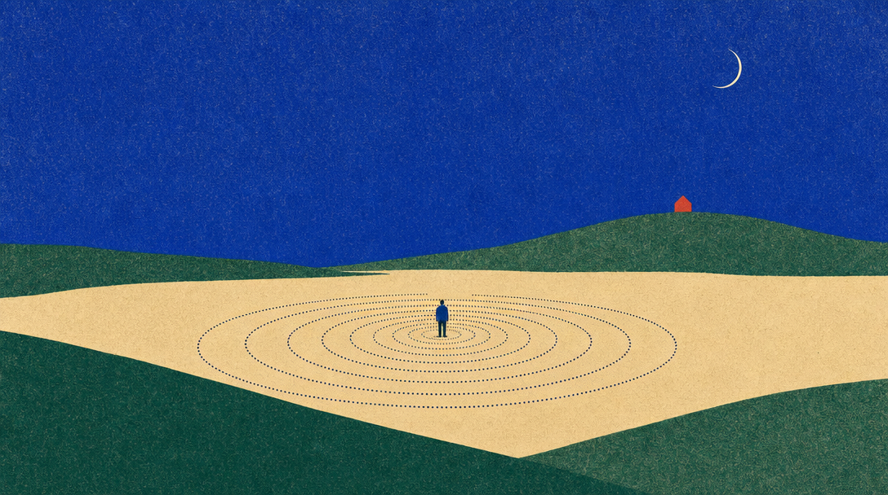

GPT Image 2.5 Sunburst on fal · quality xhigh · 1920 x 1080 · Sep 10 2026
the three variants he asked for, edits of 01 through the same model's edit endpoint (about 8 cents each): the squares are gone, the pinned leaves are cobalt
01aleaves, blue · the pinned leaves turn cobalt, everything else untouchedopenai/gpt-image-2.5/sunburst/edit · xhigh01bleaves, turning · the leaves tint toward cobalt as they cross the sky, fully blue once pinnedopenai/gpt-image-2.5/sunburst/edit · xhigh01cleaves, night · the dark theme's poster: stars, a crescent, pale leaves, the pinned ones luminousopenai/gpt-image-2.5/sunburst/edit · xhigh
the three concepts from the first round
01the Sibyl's leaves · her prophecies scatter, kint pins them into the ledger row by rowopenai/gpt-image-2.5/sunburst · xhigh · about 7 cents02the blueprint · rows, envelope, the staircase of blocks up to a block height, the second machineopenai/gpt-image-2.5/sunburst · xhigh · about 7 cents03the stele · the inscribed stone lit by the laptop at its base, the key, the Sibyl readingopenai/gpt-image-2.5/sunburst · xhigh · about 7 cents
for reference: the two earlier renders on GPT Image 2 (high, 16:9)
the sand plain · the L3b hero until nowfal-ai/gpt-image-2 · high

grainwave · the mood testfal-ai/gpt-image-2 · high